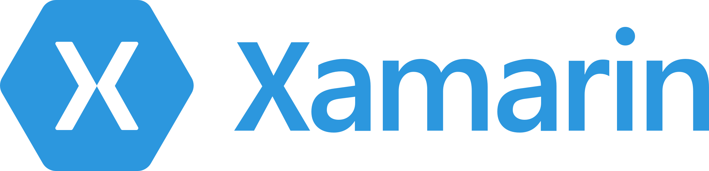

Created by sekineka
C#でアプリが作れるクロスプラットフォームエンジン
そこで
良いところ
できること
できないこと
下記がインストール済み
Demo
iOSとの比較
public partial class iOSViewController : UIViewController
{
public iOSViewController (IntPtr handle) : base (handle)
{
}
#region View lifecycle
public override void ViewDidLoad ()
{
base.ViewDidLoad ();
// Perform any additional setup after loading the view, typically from a nib.
}
#endregion
}
Androidとの比較
public class MainActivity : Activity
{
protected override void OnCreate (Bundle bundle)
{
base.OnCreate (bundle);
SetContentView (Resource.Layout.Main);
}
}
ベンチマーク
| Xamarin.Android | Android | |
|---|---|---|
| 通信 | 0.212秒 | 0.211秒 |
| 画面遷移 | 0.79秒 | 0.83秒 |
| ストレージ読み込み | 0.000695秒 | 0.000675秒 |
ベンチマーク
| Xamarin.iOS | iOS | |
|---|---|---|
| 通信 | 0.229秒 | 0.238秒 |
| 画面遷移 | 0.08秒 | 0.07秒 |
| ストレージ読み込み | 0.000637秒 | 0.000519秒 |
Gradle Plugin
Nuget
MvvMCross
Calabash と Xamarin Test Cloud
まとめ
ありがとうございました